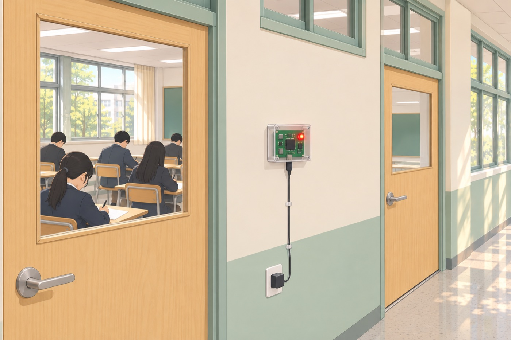
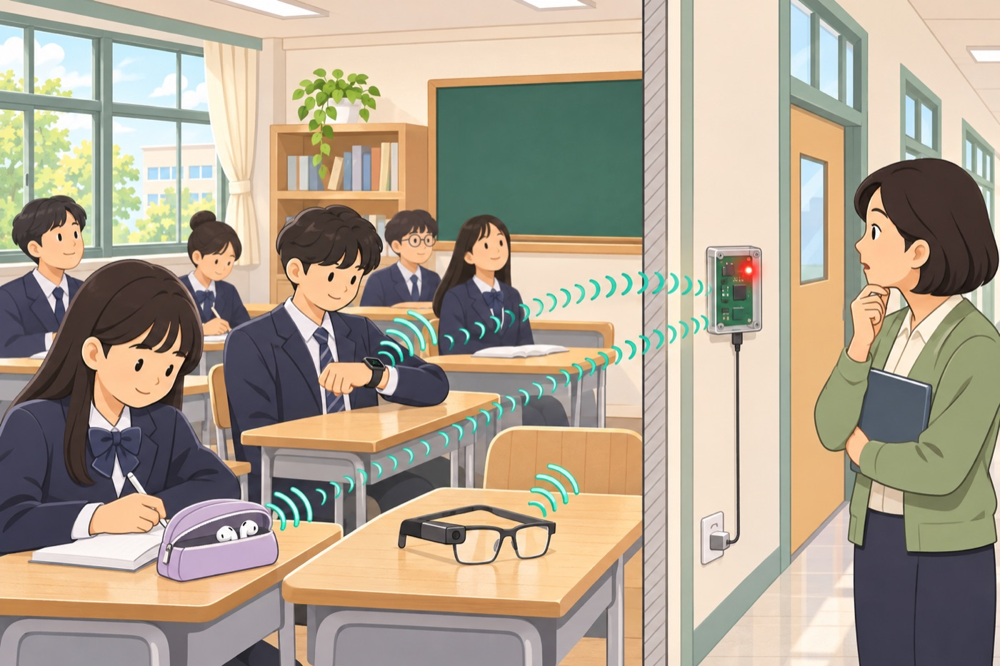

교실 전파 감지기(bt-scout) · 2026년 11월 · 안내서 1/2
교실 전파 감지기 만들기
① 피코 편
전자 부품을 처음 만져 보는 분을 위한 안내서입니다. 납땜은 없습니다. 이 안내서만 따라 해도 블루투스 기기와 핫스팟을 잡는 감지기가 완성됩니다.

② ESP32 편: 와이파이만 켜 둔 전화까지 잡도록 부품을 더합니다. 피코 편을 끝낸 뒤에 합니다.
1. 무엇을 만드나

블루투스·와이파이 신호를 직접 탐지해 보는 네트워크 수업 자료입니다. 교실 안에서 전파를 내는 기기가 있으면 감지기가 LED 10개짜리 막대에 불을 켭니다. 색은 기기의 종류, 켜진 칸 수는 개수입니다. 아무것도 없으면 초록 불이 켜져 있습니다. 색 불이 켜진 감지기 앞에서 아이폰이나 갤럭시 탭으로 어떤 기기가 얼마나 세게 잡혔는지 확인합니다.
| 잡는 것 | 예 | 어느 안내서 |
|---|---|---|
| 블루투스를 켠 기기 | 무선 이어폰, 스마트안경, 스마트워치, 휴대전화 | ① 피코 편 |
| 와이파이를 내보내는 기기 | 전화 핫스팟, 자체 와이파이가 있는 소형 카메라 | ① 피코 편 |
| 와이파이만 켜 둔 기기 | 와이파이를 켜 둔 전화·태블릿 | ② ESP32 편 |
감지기는 모두 8대입니다. 한 대가 나란한 교실 2개를 맡습니다. 감지기끼리는 연결되어 있지 않아서, 한 대가 고장 나도 나머지는 그대로 동작합니다.
이 안내서의 삽화 3장은 이해를 돕기 위해 GPT로 그린 그림입니다. 실제 부품의 모양·색과 다릅니다. 부품을 꽂을 때는 삽화가 아니라 연결도와 표를 따르세요.
2. 부품 알아보기
| 부품 | 하는 일 | 감지기 1대에 |
|---|---|---|
| Raspberry Pi Pico 2 WH 손가락 두 마디 크기의 초록 기판 | 감지기의 두뇌. 블루투스를 듣고, 확인용 와이파이를 만들고, LED를 켭니다. | 1 |
| Grove Shield for Pi Pico 흰 소켓이 여러 개 달린 기판 | 피코를 꽂는 받침. 다른 부품을 케이블로 "딸깍" 꽂게 해 줍니다. | 1 |
| LED (선택) 색이 바뀌는 LED 줄. 예: Grove RGB LED Stick 10개, LED 띠 60개 | 색과 칸 수로 감지를 알립니다. 없어도 됩니다. 피코 본체의 작은 LED와 휴대전화 화면으로 확인할 수 있습니다. | 0~1 |
| Grove 케이블 양쪽 끝이 흰 4핀 플러그 | LED 막대를 쉴드에 연결합니다. | 1 |
| 마이크로 USB 케이블 | 피코의 전원과 프로그램 넣기. 데이터 겸용이어야 합니다. | 1 |
| USB 충전기 또는 보조배터리 | 전원 | 1 |
3. 컴퓨터 준비
Thonny라는 무료 프로그램을 설치합니다. 피코에 파일을 넣을 때 씁니다. thonny.org에서 받으며 Mac과 Windows 모두 됩니다.
그리고 이 프로젝트 폴더 bt-scout 안의 firmware 폴더를 준비합니다. 피코에 넣을 파일 4개가 들어 있습니다.
bt-scout/
firmware/
main.py
detect.py
config.py
page.html
4. 조립
4-1. 피코를 쉴드에 꽂기
- 쉴드 기판에서 USB라고 인쇄된 쪽을 찾습니다.
- 피코의 은색 USB 단자가 그 방향을 보게 놓습니다.
- 피코 아래의 핀 40개가 쉴드의 구멍 40개에 모두 들어갔는지 옆에서 봅니다. 한 칸 밀려 있으면 안 됩니다.
- 양쪽 끝을 엄지로 번갈아 눌러 끝까지 넣습니다. 한가운데를 세게 누르지 않습니다.
4-2. 전원 스위치를 3V3으로
쉴드에 3V3 ↔ 5V라고 적힌 작은 스위치가 있습니다. 3V3 쪽으로 밉니다. (나중에 ESP32를 달 때 5V로 바꿉니다. 그때 ESP32 편에서 안내합니다.)
4-3. LED 꽂기 (선택)
LED가 없으면 이 단계를 건너뜁니다.
쉴드의 흰 소켓 옆에는 이름이 인쇄되어 있습니다. 그 글자를 보고 꽂습니다.
- Grove 케이블 한쪽을 LED 막대의 흰 소켓에 꽂습니다. 막대에 소켓이 양 끝에 두 개 있으면 IN 또는 화살표가 시작되는 쪽에 꽂습니다.
- 반대쪽을 쉴드의 D16에 꽂습니다. 플러그는 한 방향으로만 들어갑니다. 안 들어가면 뒤집어 보세요.
- D18은 비워 둡니다. 부저는 쓰지 않습니다.
조립 점검표
- 피코의 USB 방향이 쉴드의 USB 표시와 같다
- 스위치가 3V3 쪽이다
- LED 막대가 D16에 꽂혀 있다
5. 피코에 프로그램 넣기
5-1. MicroPython 설치 (피코마다 처음 한 번)
MicroPython은 피코가 파이썬 프로그램을 이해하게 해 주는 기본 프로그램입니다.
- micropython.org의 Download에서 Raspberry Pi Pico 2 W를 찾아 최신
.uf2파일을 받습니다. 이름이 비슷한 "Pico W"나 "Pico 2"는 다른 것입니다. "2"와 "W"가 둘 다 있어야 합니다. - 피코 위의 작은 흰 단추 BOOTSEL을 누른 채로 USB 케이블을 컴퓨터에 꽂습니다. 꽂은 뒤 단추에서 손을 뗍니다.
- 컴퓨터에
RP2350이라는 USB 메모리 같은 것이 나타납니다. - 받은
.uf2파일을 그 안으로 끌어다 놓습니다. - 몇 초 뒤
RP2350이 저절로 사라집니다. 설치가 끝난 것입니다.
5-2. 파일 4개 넣기
- Thonny를 엽니다.
- 창 오른쪽 아래 구석의 글자를 눌러 MicroPython (Raspberry Pi Pico)를 고릅니다. 아래쪽 창에
>>>가 보이면 연결된 것입니다. - 위 메뉴에서 보기 → 파일을 누릅니다. 왼쪽에 "이 컴퓨터"와 "Raspberry Pi Pico" 두 칸이 생깁니다.
- "이 컴퓨터" 칸에서
bt-scout/firmware폴더로 들어갑니다. main.py,detect.py,config.py,page.html을 하나씩 오른쪽 단추로 눌러 /에 업로드를 고릅니다.- "Raspberry Pi Pico" 칸에 파일 4개가 보이면 끝입니다.
5-3. 이 감지기의 이름 정하기
"Raspberry Pi Pico" 칸의 config.py를 두 번 눌러 열고 맨 위 몇 줄을 고칩니다.
GRADE = 1 # 학년: 1 또는 2 CLASSES = "1,2" # 맡은 두 반: "1,2" "3,4" "5,6" "7,8" AP_PASSWORD = "12345678" # 기본 암호. 꼭 바꾸세요(8자 이상, 8대 모두 같게) LED_TYPE = "stick" # 색이 바뀌는 LED 줄이면 "stick", 색이 하나인 LED 한 개면 "single" LED_COUNT = 10 # LED 개수(10, 60 등) AP_CHANNEL = 1 # 7장의 표를 보고 1, 6, 11 중 하나
고친 뒤 Ctrl+S(Mac은 Cmd+S)로 저장합니다. 따옴표(")는 지우지 않습니다.
SNIFFER와 RF_SENSOR는 ESP32 편에서 부품을 달 때 바꿉니다.6. 처음 켜 보기
- 피코의 USB를 충전기나 보조배터리에 꽂습니다.
- 10초쯤 기다립니다. LED 줄의 첫 칸이 초록으로 켜지면 정상입니다.
- 휴대전화의 블루투스를 끄고 와이파이 목록을 엽니다.
SCOUT라는 와이파이를 골라config.py에 정한 암호를 넣습니다. - "인터넷에 연결되지 않음"이 나오면 정상입니다. 아이폰은 Wi-Fi 유지, 갤럭시는 연결 유지를 고릅니다.
- 사파리나 크롬 주소창에
192.168.4.1을 넣습니다. - 레이더가 돌아가는 "전파 감지 현황" 화면이 뜨고 오른쪽 위에 "지금 연결: 1학년 1,2반"가 보이면 성공입니다.

화면에서 확인할 것
| 보이는 것 | 뜻 | 할 일 |
|---|---|---|
| 블루투스 기기 목록에 무언가 뜬다 | 피코가 블루투스를 잘 듣고 있음 | 없음 |
| "이 감지기에는 와이파이 청취기(ESP32)가 없습니다" | ESP32를 아직 달지 않았다는 안내 | 정상입니다 |
| "감지됨"이 계속 뜬다 | 주변에 기기가 많음(교무실 등) | 정상입니다. 교실에서 기준 측정을 하면 줄어듭니다 |
대시보드: 8대의 기록을 한 화면에
8대 모두 와이파이 이름이 SCOUT로 같습니다. 복도를 걸으면 휴대전화가 가까운 감지기로 저절로 옮겨 붙고, 화면은 그때마다 그 감지기의 최근 기록을 받아 휴대전화 안에 모읍니다. 한 바퀴 돌고 나면 층별·위치별로 8대의 기록이 한 화면에 보입니다.
- 맨 위 레이더: 지금 연결된 감지기가 잡고 있는 신호. 가운데에 가까울수록 센 신호입니다. 점의 방향은 실제 방향이 아닙니다.
- 전체 감지기 칸: 층과 위치(가 변 A·B, 나 변 C·D)대로 놓입니다. 칸마다 최근 1·3·6시간의 감지 막대와 "몇 분 전에 모았는지"가 나옵니다. 칸을 누르면 그 감지기의 감지 기록(시각, 종류, 지속 시간)이 아래에 나옵니다.
- 휴대전화가 옮겨 붙는 데 수십 초가 걸릴 수 있습니다. 감지기 앞에서 화면 오른쪽 위의 "지금 연결" 이름이 바뀔 때까지 잠깐 기다립니다. 안 바뀌면 와이파이를 껐다 켭니다.
- 기록은 감지기의 메모리에 최근 6시간만 있고 전원이 꺼지면 사라집니다. 휴대전화에 모은 것은 "기록 지우기"를 누를 때까지 남습니다.
- 와이파이에 붙을 때 저절로 뜨는 작은 창이 아니라 사파리나 크롬에서 열어야 기록이 모입니다.
LED가 알려 주는 것
config.py의 LED_TYPE이 "single"이면 D16의 LED 하나로 알립니다(3초마다 반짝 = 정상, 계속 켜짐 = 감지, 빠른 깜박임 = 기준 측정). 피코 본체의 작은 초록 LED도 똑같이 움직이므로 LED가 없어도 확인할 수 있습니다. LED 10개 막대를 달면 "stick"으로 바꾸고 아래 표대로 봅니다.| LED 막대 | 뜻 |
|---|---|
| 첫 칸이 초록 | 정상, 감지 없음 |
| 파랑 칸 | 블루투스 기기. 켜진 칸 수가 잡힌 수 |
| 빨강 칸 | 와이파이. 핫스팟, 기기 간 직접 연결, 와이파이를 켠 기기(ESP32를 단 감지기). 켜진 칸 수가 잡힌 수 |
| 흰색 칸 | 광대역 전파 급증 (센서를 달고 켠 감지기만) |
| 10칸이 모두 켜짐 | 합쳐서 10개 이상. 종류마다 최소 한 칸은 보입니다 |
| 초록이 한 칸 건너 번갈아 깜박 | 기준 측정 중(60초) |
| 마지막 칸이 주황으로 깜박 | ESP32에서 신호가 오지 않음 |
| 3초 넘게 모두 꺼짐 | 전원이나 프로그램 문제 |
색 순서는 왼쪽부터 빨강, 파랑, 흰색입니다. LED가 60개면 한 칸이 LED 6개입니다. 신호가 사라지고 1~2분이 지나면 그 칸이 꺼집니다.
7. 8대 설정과 놓는 자리
1대가 잘 되면 나머지 7대를 같은 순서로 만듭니다. config.py의 GRADE, CLASSES, AP_CHANNEL만 다릅니다. 화면에는 "1학년 1,2반"처럼 나옵니다.
| 감지기 (화면에 나오는 이름) | GRADE | CLASSES | AP_CHANNEL |
|---|---|---|---|
| 1학년 1,2반 | 1 | "1,2" | 1 |
| 1학년 3,4반 | 1 | "3,4" | 6 |
| 1학년 5,6반 | 1 | "5,6" | 11 |
| 1학년 7,8반 | 1 | "7,8" | 1 |
| 2학년 1,2반 | 2 | "1,2" | 6 |
| 2학년 3,4반 | 2 | "3,4" | 11 |
| 2학년 5,6반 | 2 | "5,6" | 1 |
| 2학년 7,8반 | 2 | "7,8" | 6 |
대시보드는 학년마다 1~4반을 한 변, 5~8반을 다른 변으로 그립니다. 감지기 본체에도 "1학년 1,2반" 이름표를 붙여 두면 헷갈리지 않습니다.
놓는 요령
- 두 교실이 만나는 벽 앞 복도에, 교실 쪽 벽에 붙여 놓습니다.
- 높이는 가슴 높이(1.5m) 이상입니다. 바닥에 두면 잘 듣지 못합니다.
- 복도 쪽 창문이나 문 가까이가 좋습니다. 유리와 나무는 콘크리트보다 전파가 잘 통합니다.
- 금속 사물함 위나 금속 상자 안은 피합니다.
- 피코의 USB 반대쪽 끝(안테나)이 교실을 향하게 합니다.
8. 교실에서 재 보기 (쓰기 전에 꼭)
건물마다 벽이 달라서 직접 재 봐야 합니다. 1대와 휴대전화 두 대(확인용, 실험용)면 됩니다. 값은 종이에 적어 둡니다.
- 감지기를 정한 자리에 놓고 확인용 기기로 화면을 엽니다(확인용 기기는 블루투스 끔).
- 실험용 전화의 블루투스만 켜고 교실의 가장 먼 자리(창가 뒤 구석) 책상 위에 놓습니다. "블루투스 기기" 목록에 뜬 세기(dBm)를 적습니다.
- 같은 전화를 가방 안에 넣고 다시 적습니다. 무선 이어폰이 있으면 같은 방식으로 합니다.
- 같은 전화를 옆 교실, 위·아래층 같은 자리, 중정 건너편에 놓고 각각 적습니다.
- 실험용 전화의 핫스팟을 켭니다. "와이파이 신호" 목록에 1분 안에 "감지"로 뜨는지 봅니다.
- 화면 아래 설정의 더 멀리까지 / 가까운 것만으로 기준을 맞춥니다. 2~3에서 적은 값보다 조금 낮고, 4에서 적은 값보다 높은 숫자가 좋습니다.
9. 수업과 활동에서 쓰기
시작하기 전
- 감지기를 제자리에 놓고 전원을 꽂습니다. 첫 칸이 초록인지 봅니다.
- 화면을 열어 기준 측정 (60초)을 누릅니다. 전자칠판, 교실 컴퓨터, 주변 공유기처럼 늘 있는 것을 기억해 감지에서 뺍니다. 초록이 번갈아 깜박이는 동안 기다립니다.
- 측정이 끝나고 "감지된 기기 없음"이 되는지 봅니다.
살펴보기
- 이어폰 케이스를 열거나 전화의 블루투스·핫스팟을 켜고, LED와 화면이 어떻게 바뀌는지 봅니다.
- 색 불이 켜지면 색과 칸 수로 종류와 개수를 먼저 보고, 화면의 레이더 탭에서 어떤 기기가 얼마나 세게 잡혔는지 확인합니다.
- 감지기가 여러 대면 다른 감지기 앞으로 갑니다. 휴대전화가 저절로 그 감지기로 옮겨 붙고, 건물 탭에 위치별 현황이 모입니다.
정밀 탐색: 신호가 나오는 곳 찾기
화면의 탐색 탭에서 기기 하나를 골라 찾기를 누르면, 감지기가 그 기기의 신호 세기만 빠르게 따라갑니다. 감지기를 보조배터리에 꽂아 손에 들고 다니면 가까워질수록 숫자가 커지고 LED의 노란 칸이 늘어납니다. 숨겨 둔 이어폰을 찾는 활동으로 쓸 수 있습니다.
- 감지기를 살펴볼 곳에 한 뼘 안쪽까지 대고 2초쯤 멈춥니다.
- 자리마다 이 자리 기록을 누르면 센 순서로 줄을 세워 줍니다.
- 가장 센 두세 곳으로 좁힌 뒤, 그 자리들만 다시 잽니다.
미리 안내할 것
- 화면을 보는 사람: 본인의 워치·휴대전화·이어폰의 블루투스와 와이파이를 끕니다.
- 함께 있는 사람: 블루투스·와이파이 신호를 감지한다는 사실을 미리 알립니다.
10. 막혔을 때
| 증상 | 해 볼 것 |
|---|---|
| 피코를 꽂아도 컴퓨터에 아무 반응이 없다 | 케이블을 데이터 겸용으로 바꿉니다. BOOTSEL 단추를 누른 채 다시 꽂습니다. |
Thonny에 ImportError: bluetooth | 다른 종류의 uf2를 넣었습니다. "Pico 2 W"용으로 5-1을 다시 합니다. |
| LED가 전혀 안 켜진다 | D16에 꽂혔는지 확인합니다. 어두워서 안 보이면 config.py의 LED_BRIGHT를 80으로 올립니다. |
와이파이 SCOUT가 안 보인다 | 전원을 넣고 10초 기다립니다. 암호가 8자보다 짧으면 뜨지 않습니다. |
| 화면이 안 열린다 | 주소가 192.168.4.1인지 확인합니다. 전화가 이동통신으로 넘어갔으면 와이파이를 다시 고릅니다. |
| 늘 감지 상태다 | 기준 측정을 다시 합니다. 확인용 기기와 주변 사람 기기의 블루투스를 끕니다. 감지기 바로 옆에 켜진 기기가 없는지 봅니다. |
| 아무것도 안 잡힌다 | 화면에서 "더 멀리까지"를 눌러 기준을 -80 근처로 낮춥니다. |
| 고친 설정이 적용되지 않는다 | config.py를 저장한 뒤 USB를 뽑았다 꽂습니다. |
11. 한계
| 상황 | 잡히는가 |
|---|---|
| 블루투스를 켠 이어폰·워치·스마트안경·전화 | 잡힘 |
| 와이파이만 켜 둔 전화 | 피코만으로는 잡히지 않음. ESP32 편의 부품을 달면 잡힘 |
| 핫스팟을 켠 전화 | 잡힘 |
| 블루투스·와이파이를 끄고 이동통신만 쓰는 전화 | 잡히지 않음 |
| 전원이 꺼진 기기, 저장만 하는 카메라, 받기만 하는 수신기 | 잡히지 않음 |
- 초록만 켜져 있다고 교실에 기기가 없다는 뜻은 아닙니다.
- 색 불이 켜졌다고 누가 무엇을 하고 있는지 알 수 있는 것도 아닙니다. 끄는 것을 잊은 워치일 수 있습니다. 이 결과만으로 사람을 판단하지 않습니다.
- 감지기 한 대가 맡은 두 교실 중 어느 쪽인지는 구분하지 못합니다.
- 위아래 층의 신호가 섞일 수 있습니다.
- 감지기는 신호의 종류와 세기만 보고, 내용은 읽지 않으며 기록을 남기지 않습니다.
12. 낱말 풀이
| 낱말 | 뜻 |
|---|---|
| 피코(Pico) | 작은 컴퓨터 기판. 프로그램을 넣으면 그 일만 계속합니다. |
| 쉴드(Shield) | 피코 위아래에 끼워 부품을 쉽게 꽂게 해 주는 받침 기판 |
| Grove(그로브) | 부품을 4핀 플러그로 꽂는 규격. 납땜이 필요 없습니다. |
| 포트 | 쉴드의 흰 소켓 하나하나. 옆에 이름(D16, A0, UART1 등)이 인쇄되어 있습니다. |
| MicroPython | 피코에서 돌아가는 파이썬 |
| uf2 | 피코에 끌어다 놓아 설치하는 파일 형식 |
| 업로드 | 컴퓨터의 프로그램을 기판으로 보내는 일 |
| dBm | 전파 세기 단위. 음수이며 0에 가까울수록 셉니다. |
| 기준 측정 | 빈 교실에서 "원래 있는 신호"를 기억시키는 일 |
| 핫스팟 | 전화가 와이파이 공유기 노릇을 하는 기능 |